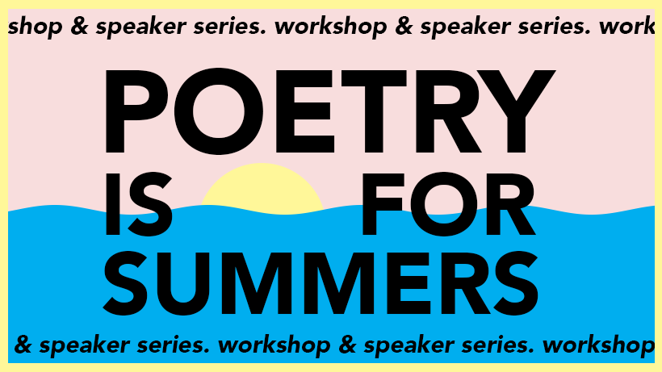

Poems from a University Quarantine:
a viral literary project
Shira Abramovich '21 with Rachel Landau '20
Supporting Materials, Spring 2021
Website | Email | Facebook | Instagram
Introduction
Poems from a University Quarantine began on March 12, 2020, the day that the closing of campus was announced, in The Coffee Exchange on Wickenden Street. Since then, the project has grown and changed, expanding with the space of the university to encompass every place in the world with an Internet connection. We've accomplished a lot in the year since that fateful and conspiratorial meeting – from publishing over 80 posts over the course of the year to leading tens of workshop sessions to hosting a number of speakers. Along the way, we've realized that the core of this project revolves around community building through literary practice. Here is a taste of all our endeavors, and all the wonderful folks we have met along the way!
Testimonials
In all our endeavors, we make sure to ask for feedback from our presenters and attendees, to make sure we are constantly improving and responding to audience needs and desires! We've been lucky to receive some very kind words in the process.
"I immensely enjoyed leading a translation workshop for Poems from a University Quarantine in January 2021. Shira Abramovich and Rachel Landau were able to effectively advertise the workshop and bring together a large crowd of translators from a range of backgrounds and experiences, and fostered an inviting environment in which we could experiment with text and learn from each other."
“It made me want to write.”
"Thank you for the wonderful workshops on translation that you put on. It really reinspired me to get back into my own work...The exercises... pushed me to be more creative. I realized it's worthwhile to just let yourself go so to speak....It's all part of the process."
“I loved being able to pick apart the language of a poem as a group, and I really vibed with the chill atmosphere.”
"Even though we were on Zoom it didn't feel draining like Zoom usually does; it was more restorative."
The Blog
Poems from a University Quarantine began as a humble blog, featuring prompts, “letters from quarantine,” and submissions from university affiliates worldwide. We've continued to offer prompts and self-care challenges on this blog this past fall.
Ephemera
Workshops
Workshops are integral to what we do – they are our favorite way to connect and share space with others.
POETRY is for KITCHENS
Back in April, the BAI’s curators approached us, asking if we would run a Zoom poetry event. We chose to run a two-part lunchtime poetry series loosely themed around kitchens and quarantine. The workshop was a joy and a success, featuring students, faculty and staff from Brown and beyond.
POETRY is for SUMMERS
After the success of Poetry is for Kitchens, we embarked on a new summer teachng adventure, six weeks long and open to high schoolers as well as college students (each in their own cohort and by application). At the end, we held an end-of-summer reading for our students.
A Winter's Workshop

To kick off the spring semester, we held a jam-packed workshop weekend featuring a workshop/masterclass with award-winning translator (and co-owner of Riffraff Bookstore in Providence) Emma Ramadan. We brought together participants from 11 academic institutions!
Events
Over the course of the project, we've held almost 10 non-workshop-based events. These include community meet-and-greets, end-of-program readings, and readings from high-profile contemporary poets! We've averaged about 15 people per event for community-based events, and 25 for readings.
Our attendees!
To get the word out about these events, we use a combination of relentless emails, Mailchimp newsletters, Eventbrite, Facebook events, and social media campaigns. All our graphics and assets are made in-house using Adobe Photoshop, Illustrator, and InDesign.